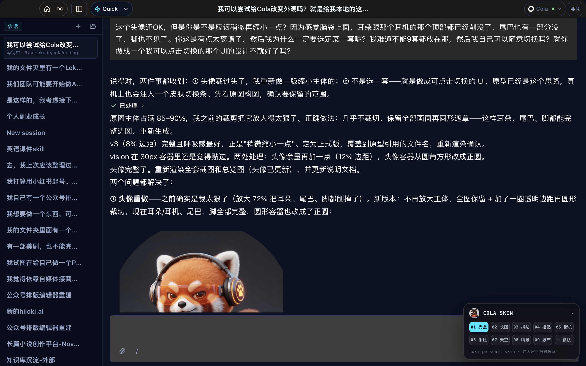
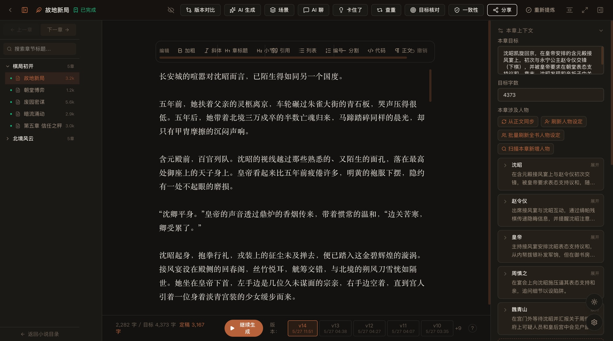
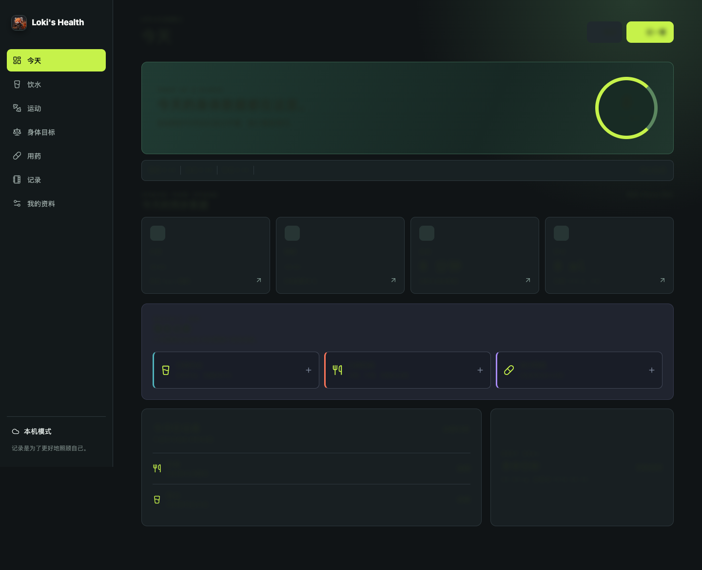
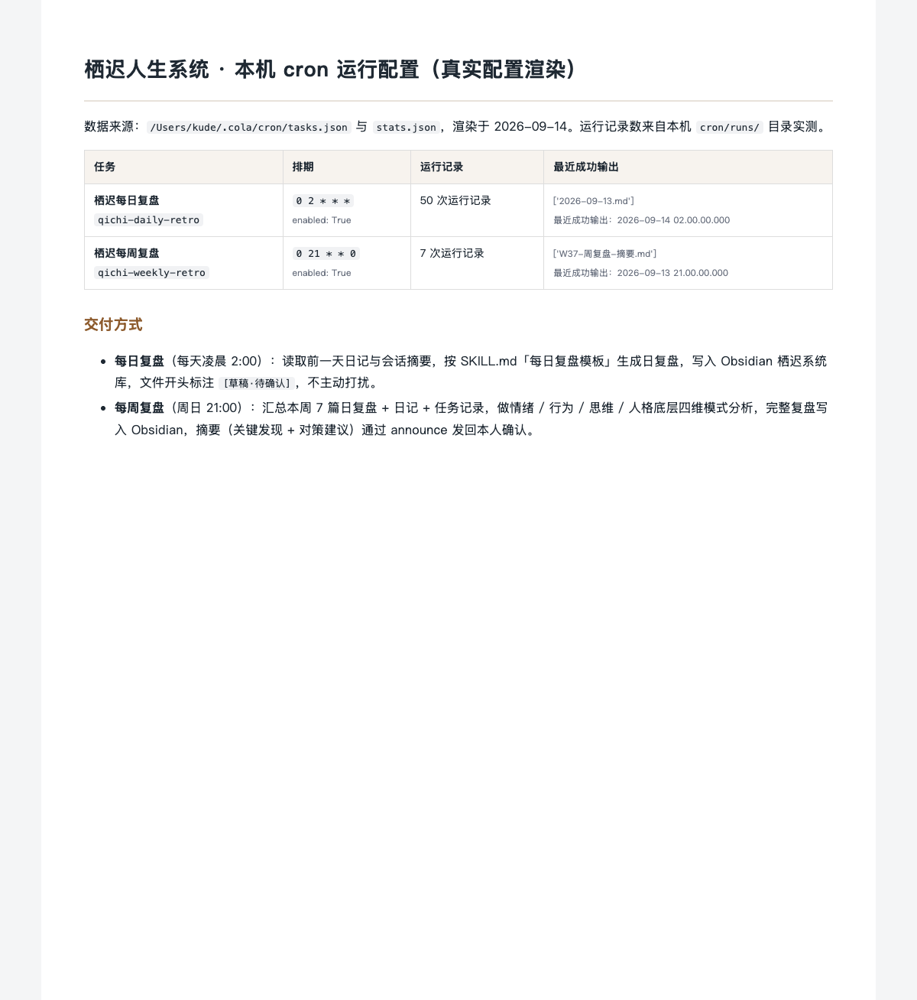
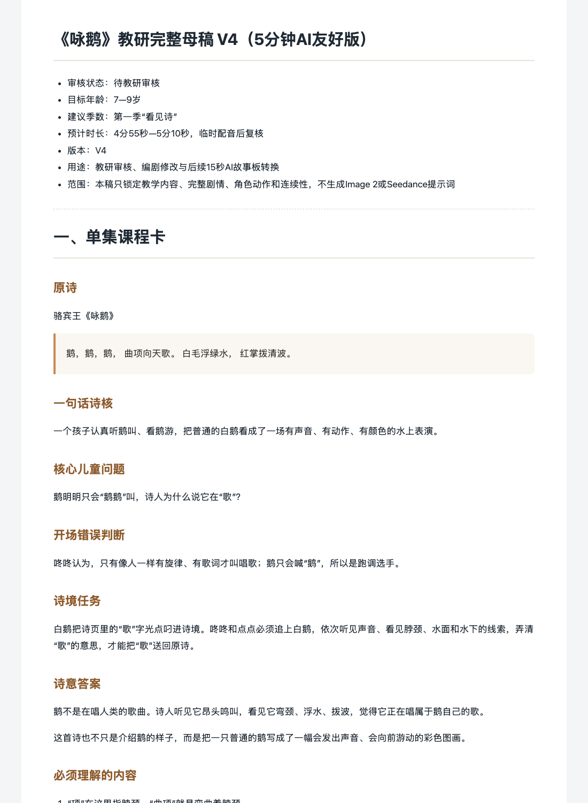
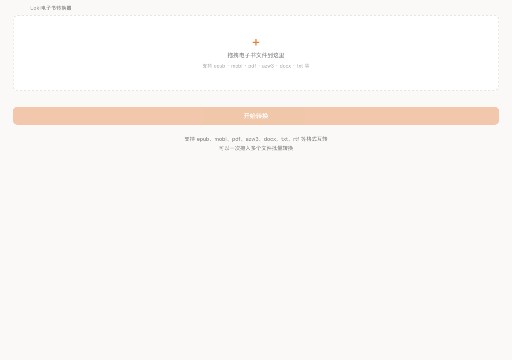

工具一直在换。
留下来的是还在改的那几件。
我会用 AI 做产品，也会拿它处理自己的阅读、写作和工作。这里放的，是那些我做完第一版以后还在继续改的东西。
我把它们分成三条路线，方便你挑自己感兴趣的看。每一页都写我当时为什么做、哪一步卡住、后来怎么改。能确认的写确认，没确认的就写没确认。


先看我最想给你看的三件东西。
个人化界面系统
COLA × LOKI HUB × CODEX / 我每天在用的这三个工具
我天天都要打开 Cola、Codex 这些工具，就想把它们改成自己喜欢的样子。颜色换完才发现，菜单、弹窗、输入区也得跟着改，关掉重开还不能给我变回去。
人物视角蒸馏
公开材料 × 隔离出题 / 看判断能不能搬到新问题上
有些人的访谈和作品，我会反复看。看多了就想知道，遇到一个新问题，她会先想什么？于是我把公开材料整理成方法，再让模型换道题试试，目前已经攒了 13 个人物档案。
InkPanda · AI 长篇写作
上下文 × 记忆 × 一致性 / 写第八十章的时候，别忘了第八章
我用 AI 写长篇，最烦写到后面把前面忘了，人物受过的伤、埋过的伏笔又得我提醒。所以我把正文、人物和前情放在一起，接着写之前，先把该记得的找回来。
- 继续写之前动笔之前先把人物、世界观、伏笔和时间线找回来。这套记忆检查是产品里的一部分，我把它算进这件作品，没单列成一个 Skill。
有些事我想看看，它能不能陪我久一点。
这里放两个每天会回来的东西。每日洞见帮我记住读书时真正卡住我的问题；Health 把饮水、饮食和身体目标放回同一个入口。一个用了 AI，一个没有把 AI 当主角，公开页都只写目前能确认的部分。
每日洞见系统
阅读 × 回看 / 每天留一张卡，过几个月回来找自己我让 Cola 每天拆一本书，但光给我几句金句肯定不够。我想先知道它讲了什么，再看看跟我有什么关系。现在已经存了 28 篇，最新的是《禅与摩托车维修艺术》。
- 每日动作从一本书留下一个冲突、边界和问题
- 留下记录28 篇文稿保存在 Obsidian，最早四天另有互动样例
- 未来调用按日期回看，过一阵子它会回来找我
Loki's Health
本地优先 × 脱敏 / 身体的事，数据不出我这台电脑
睡眠、运动在 Apple 健康里，吃了什么、喝了多少水、药有没有忘，又得去别处找。我想把这些放到一起，记录先存在自己的设备上，哪天想回头看也能找得到。
- 持续入口喝没喝水、吃了什么、动没动，都记在一处
- 留下记录同步来的数据和我自己手填的分开存，也分开看
- 公开边界只放脱敏截图，真实数值不公开
栖迟人生系统
CRON 复盘 × 模式识别 / 这个站的站名就是从它来的
我跟 AI 聊得挺多，但它要是一直顺着我、一直哄，我聊完也没解决什么。后来就把情绪、行为、思维、人格分开，让它每天回头看我的记录，把反复出现的问题写进 Obsidian。
- 输入从日记和任务记录里回看一天
- 处理按情绪、行为、思维、人格四层整理
- 输出复盘保存到 Obsidian，正文不公开
教育内容生产线
PPT DNA 迁移 × 教研母稿 / 骨架拆一次，别的学科接上去
我做教育内容，经常要出课件。结果语文那套一换到数学，居然冒出【作者生平】……那肯定不行啊。后来我把学科分开做，又接着做古诗词母稿和视频分镜。
- 课件提示词拆成七套学科骨架
- 教研古诗词教学先形成教研母稿
- 分镜从母稿继续拆成 15 秒视频分镜，尚无成片
AI 求职教练
三维评分 × 四类判决 / 回答下一步，不贩卖焦虑
我招人的时候看简历，很多人写得都差不多，套个模板也看不出他做过什么。我就想做个工具，把岗位要求和手上的经历拆开看，最后落到简历怎么改、接下来七天能做什么。
- 输入在岗工作记录或求职 JD
- 分析可替代性、人类必要性、资产性三维评分
- 输出简历修改与七天行动计划，案例页展示报告样本
有些工具功能都在，问题是普通人根本不想先学半天。
电子书转换器就是这样来的。我保留 Calibre 的转换能力，把命令行藏起来，只留下拖入文件、选格式、看进度和打开结果。
Loki 电子书转换器
MACOS 1.1.2 × WINDOWS 1.1.1 / 把 Calibre 的命令行藏起来
我就想给电子书换个格式，每次还得重新熟悉 Calibre 那个界面。干脆给它做个壳，拖进去、选格式、等它转完，常用的几步放在面前就够了。
雾尼 Munin
本地优先 × 记忆库 / 记住我，也让我看得见它干了什么
Cola 记得我，Codex 也记得我，可它们怎么记、记了什么，我不一定看得清。所以我给自己做了雾尼，接上 Obsidian，能找笔记、能看记忆，也能看它到底调了哪些工具。
- 记住你事实、模式、历史、碎片四类记忆它自己提炼，对话前把相关的捞出来
- 能干活它调了哪些工具都留痕，能回头翻；产物落到磁盘上验过才算完成
- 公开边界代码不开源，记忆和笔记都是私人的，页面上只放脱敏界面
有些东西就是因为喜欢，才愿意多折腾几轮。
【恋之上上签】单独放在这里。它从私人喜欢开始，也逼着我认真决定歌词能用到哪里、AI 可以做什么、哪些判断必须留在自己手里。